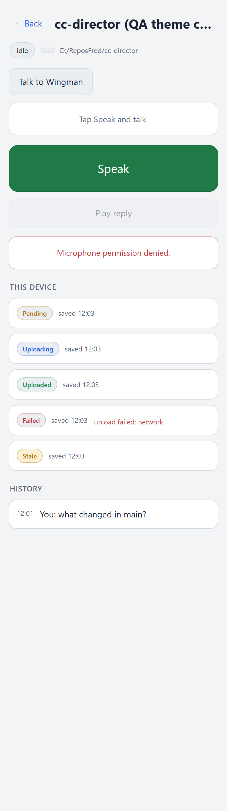
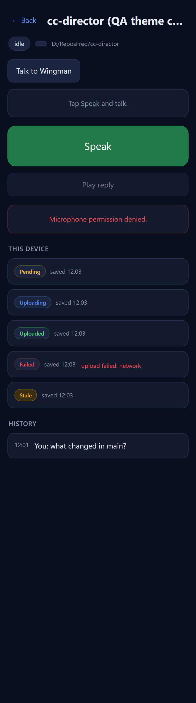
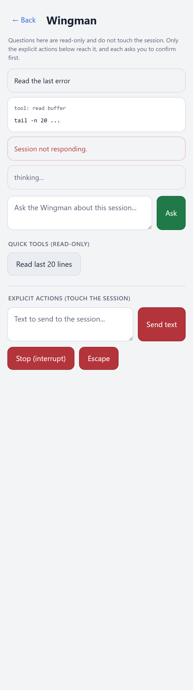
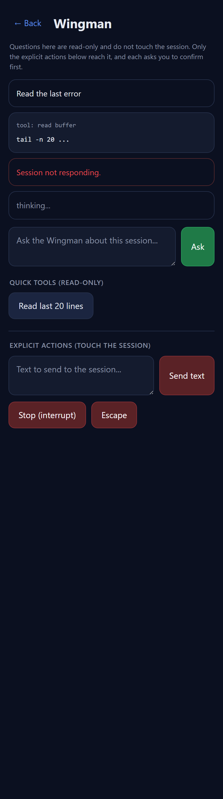

PR: #441 (feat/428-voice-theme, base feat/427-voice-mobiledetect) ·
QA identity: independent QA Agent · Option A: NOT merged.
VERIFIED - all acceptance criteria met. PASS.
The change is CSS-only (wwwroot/pages/voice/voice.css). I checked out the PR branch into
my own worktree, served the actual Cockpit wwwroot over a local HTTP server, and loaded the
real /pages/voice/index.html + voice.css in Chromium under
color_scheme: 'light' and color_scheme: 'dark' (which drives
prefers-color-scheme). I revealed the session and wingman views and injected representative
outbox/error markup so every themed token paints, then captured full-page screenshots and measured
computed colors, button geometry, and WCAG relative-luminance contrast in each scheme. Harness:
render_qa.py in this folder; raw measurements in metrics.json.
| # | Criterion | Expected | Actual (my measurement) | Result |
|---|---|---|---|---|
| 1 | /voice renders correctly in both light and dark, following prefers-color-scheme. |
Light scheme -> light surfaces + dark text; dark scheme -> dark surfaces + light text; driven by OS preference. | Under color_scheme:light body bg = rgb(243,244,246), text rgb(27,34,51).
Under color_scheme:dark body bg = rgb(11,16,32) (#0B1020), text rgb(230,234,242).
The single @media (prefers-color-scheme: light) block re-points the tokens; switching the
emulated scheme re-themes the whole page. Both render cleanly (see screenshots). |
PASS |
| 2 | Text contrast and button sizes remain accessible in both themes. | Contrast >= WCAG AA (4.5:1 normal text); large touch targets preserved (>= ~44px) and identical across themes. | Contrast (light / dark): ink-on-bg 14.42 / 15.70; muted-on-bg 5.41 / 6.13; primary-button ink-on-fill 5.34 / 5.34; error-stage text-on-bg 5.01 / 4.84 - all above AA 4.5. Button sizes (identical both themes): Speak 388×87, Play reply 388×50, Talk to Wingman 156×50 - all ≥ 44px tall. Only colors change between schemes; layout/padding/ font-size are shared. | PASS |




:root blocks (dark default + light override), one @media (prefers-color-scheme: light).--primary-bg:#1f7a47, --error-line:#5a2a2d, badge line tints), so the dark look is byte-equivalent to baseline.voice.css); no architecture/security change, no CenCon doc impact; no DT rule implicated.Conclusion: 2/2 acceptance criteria PASS. Ready for human merge (Option A - not merged by QA).